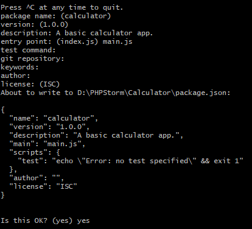

What is ElectronJS?
ElectronJS is a NodeJS module that allows you to create desktop applications by using the same HTML, CSS
& JavaScript you know and love.
The web pages are rendered using Chromium, the open source project Google Chrome is based on.
ElectronJS is currently used by several big apps, just to name a few:
Requirements
- An IDE to write your code, or Notepad if you're really feeling it.
- NodeJS and / or Yarn installed
Setting up NodeJS
Skip this step if you already have NPM or Yarn installed on your
system.
In order to be able to run ElectronJS, you will need to have NodeJS installed on your system.
Installing NodeJS on Windows / Mac
To install NodeJS on Windows or Mac, you can go to https://nodejs.org/en/download/,
here you can just download either the Window or Mac installer.
Once you downloaded the installer, you can just execute it and continue with the default options.
Installing NodeJS on Linux
Debian or Ubuntu
curl -sL https://deb.nodesource.com/setup_13.x | sudo -E bash -
sudo apt-get install -y nodejs
RHEL, CentOS, CloudLinux or Fedora
curl -sL https://rpm.nodesource.com/setup_13.x | sudo bash -
Other operating systems
If you are using another operating system that is not mentioned above, you can always check out the
official NodeJS documentation for your
specific OS.
Setting up an ElectronJS project
Initializing your NodeJS project
For this example, lets just make a simple ElectronJS Calculator App, so the name of our app will be
"Calculator".
Lets start by making a directory called "Calculator" and initialize a NodeJS project inside of it, you
can do this as follows:
mkdir Calculator && cd Calculator
npm init
Now you will get asked the information about the project. You can use the default for almost everything
(press ENTER to use default).
As description I entered "A basic calculator app" and the entry point can be set to
main.js.
Once you did that, you will get something like this:

If all of this is correct, enter "yes" to confirm it.
Afterwards, lets run the following command to actually install NodeJS:
npm i -D electron
Setting up base files
Lets start by setting up the base files. These files are: main.js & index.html.
The index.html file is just an empty html file for now.
All logic of creating a window is located in main.js:
const {app, BrowserWindow} = require('electron');
function createWindow() {
const mainWindow = new BrowserWindow({
width: 500,
height: 600,
// Setting icon location
icon: __dirname + '/media/favicon.jpg',
// Disabling resizing of our calculator window
resizable: false,
maximizable: false,
fullscreenable: false,
});
// Loads the file index.html into the window.
mainWindow.loadFile('index.html');
// Removes the ElectronJS menu
mainWindow.setMenu(null);
}
app.whenReady().then(createWindow);
// Quit when all windows are closed.
app.on('window-all-closed', function () {
if (process.platform !== 'darwin') {
app.quit()
}
});
app.on('activate', function () {
// On macOS it's common to re-create a window in the app when the
// dock icon is clicked and there are no other windows open.
if (BrowserWindow.getAllWindows().length === 0) {
createWindow();
}
});
<!doctype html>
<html lang="en">
<head>
<meta charset="UTF-8">
<meta name="viewport" content="width=device-width, user-scalable=no, initial-scale=1.0, maximum-scale=1.0, minimum-scale=1.0">
<meta http-equiv="X-UA-Compatible" content="ie=edge">
<title>Calculator</title>
</head>
<body>
<h1>Calculator</h1>
</body>
</html>
Once you created these files, you can try starting up your app in it's current state using the following
command:
electron .
This will open your Calculator app, you should now see the amazing "Calculator" title in it! This is how
you set up a basic ElectronJS project.
Creating the calculator
In ElectronJS, you can make your app like you make a site. In this example, I'll be using Bootstrap to
make it a bit easier to make our Calculator.
<!doctype html>
<html lang="en">
<head>
<meta charset="UTF-8">
<meta name="viewport" content="width=device-width, user-scalable=no, initial-scale=1.0, maximum-scale=1.0, minimum-scale=1.0">
<meta http-equiv="X-UA-Compatible" content="ie=edge">
<title>Calculator</title>
<link rel="stylesheet"
href="https://stackpath.bootstrapcdn.com/bootstrap/4.4.1/css/bootstrap.min.css"
integrity="sha384-Vkoo8x4CGsO3+Hhxv8T/Q5PaXtkKtu6ug5TOeNV6gBiFeWPGFN9MuhOf23Q9Ifjh"
crossorigin="anonymous"/>
<link rel="stylesheet"
href="assets/css/app.css"/>
</head>
<body>
<main class="container-fluid">
</main>
<script src="https://code.jquery.com/jquery-3.4.1.slim.min.js"
integrity="sha384-J6qa4849blE2+poT4WnyKhv5vZF5SrPo0iEjwBvKU7imGFAV0wwj1yYfoRSJoZ+n"
crossorigin="anonymous"></script>
<script src="https://cdn.jsdelivr.net/npm/popper.js@1.16.0/dist/umd/popper.min.js"
integrity="sha384-Q6E9RHvbIyZFJoft+2mJbHaEWldlvI9IOYy5n3zV9zzTtmI3UksdQRVvoxMfooAo"
crossorigin="anonymous"></script>
<script src="https://stackpath.bootstrapcdn.com/bootstrap/4.4.1/js/bootstrap.min.js"
integrity="sha384-wfSDF2E50Y2D1uUdj0O3uMBJnjuUD4Ih7YwaYd1iqfktj0Uod8GCExl3Og8ifwB6"
crossorigin="anonymous"></script>
<script src="assets/js/app.js"></script>
</body>
</html>
After this, all we have to do is add the rows with their buttons to the html file (main element), and
we're finished with the HTML!
<div class="row">
<input type="text" id="result" class="form-control col-10"/>
<button id="clear" class="col-2">c</button>
</div>
<div class="row h100 justify-content-center">
<button data-action="1" class="col-3">1</button>
<button data-action="2" class="col-3">2</button>
<button data-action="3" class="col-3">3</button>
<button data-action="/" class="col-3">/</button>
</div>
<div class="row h100 justify-content-center">
<button data-action="4" class="col-3">4</button>
<button data-action="5" class="col-3">5</button>
<button data-action="6" class="col-3">6</button>
<button data-action="-" class="col-3">-</button>
</div>
<div class="row h100 justify-content-center">
<button data-action="7" class="col-3">7</button>
<button data-action="8" class="col-3">8</button>
<button data-action="9" class="col-3">9</button>
<button data-action="+" class="col-3">+</button>
</div>
<div class="row h100 justify-content-center">
<button data-action="." class="col-3">.</button>
<button data-action="0" class="col-3">0</button>
<button data-action="=" class="col-3">=</button>
<button data-action="*" class="col-3">*</button>
</div>
For the CSS, we can just use some simple styling and let bootstrap do the rest.
Below you see assets/css/app.css:
main {
width: 95% !important;
margin: 25px auto;
}
/*
* Setting height of elements
*/
#result, #clear {
display: block;
height: 75px;
}
.h100 button {
min-height: 100px;
}
/*
* Adding margin so everything isn't glued together.
*/
#result {
margin-right: 5px;
}
.row {
margin-bottom: 5px;
}
.row button {
margin-right: 5px;
}
.row button:last-child {
margin-right: 0;
}
/*
* Overriding some bootstrap classes
*/
.col-3 {
-ms-flex: 0 0 24%;
flex: 0 0 24%;
max-width: 24%;
}
.col-10 {
-ms-flex: 0 0 82%;
flex: 0 0 82%;
max-width: 82%;
}
And for the JavaScript, we use a fairly basic approach to calculate everything using the eval() function
of JavaScript.
This isn't the safest approach, but as this is only a short test / demonstration it is sufficient.
A wrong input will make it so the result returns 0.
Below you see assets/js/app.js:
document.addEventListener('DOMContentLoaded', init);
function init() {
const buttons = document.querySelectorAll('button');
for (const button of buttons) {
button.addEventListener('click', handleClick);
}
document.querySelector('#clear').addEventListener('click', clearResult);
}
function clearResult() {
document.querySelector('#result').value = '';
}
function handleClick(event) {
const action = event.target.getAttribute('data-action');
// If action is '=', then we'll calculate the result and stop.
if (action === '=') {
calculateResult();
return;
}
const resultInput = document.querySelector('#result');
// Validating action, making sure people cannot type "+*" for example or "*."
if (validateAction(action, resultInput)) {
// Adding the action to the result input field.
resultInput.value += action;
} else {
// Replacing the last action to the new action in the result input field.
resultInput.value = resultInput.value.substr(0, resultInput.value.length - 1) + action;
}
}
function validateAction(action, input) {
const lastChar = input.value[input.value.length - 1];
for (let char of ['.', '-', '+', '/', '*']) {
if (lastChar === char) {
for (let c of ['.', '-', '+', '/', '*']) {
if (action === c) {
return false;
}
}
}
}
return true;
}
function calculateResult() {
const resultInput = document.querySelector('#result');
try {
resultInput.value = eval(resultInput.value);
} catch (e) {
resultInput.value = '0';
}
}
Compiling your app
Now that we finished our small app, we can try to compile it so anyone can run it without needing to
have Electron / NodeJS installed.
First, lets see if everything functions as we want by running our app for a last time:
electron .
If everything seems to be running as it should. Then we can compile our code into an executable.
For compilation, we will use Electron
Builder.
Firstly, we need to install the electron-builder package:
npm i -D electron-builder
Secondly, we should add some extra options in the package.json file:
"build": {
"appId": "your.application.id",
},
"scripts": {
"pack": "electron-builder --dir",
"dist": "electron-builder"
}
Finally, you can build your app into an executable installer, it will be located in the dist/ folder:
npm run dist
That was it! Now you know how to build an ElectronJS app from scratch and compile it into an installer.
ElectronJS allows you to go much further then just this application! Make sure to check out their website aswell for some more detailed examples.
The code of this example is also available on my GitHub for if you want to
play with it!